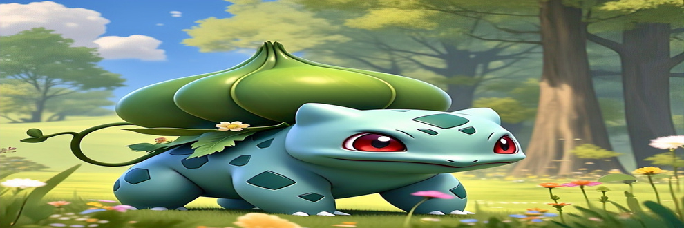

- 


Tepig
Tepig é um pequeno Pokémon do tipo Fogo, introduzido na quinta geração. Ele é conhecido por ser um "porquinho de fogo" e se parece muito com um leitão com orelhas longas, um nariz rosado e uma cauda encaracolada com uma esfera vermelha na ponta. É um Pokémon ágil que usa sua velocidade para se esquivar dos ataques e confundir seus inimigos, além de lançar bolas de fogo pelos seus narizes. Tepig evolui para Pignite e depois para Emboar.

Snivy
Snivy é um Pokémon do tipo Planta da região de Unova, introduzido na quinta geração da série Pokémon. Ele é um Pokémon reptiliano bípede, de cor verde com detalhes amarelos e creme. Possui videiras nas costas que utiliza para se locomover e atacar, além de uma folha na ponta da cauda que pode realizar fotossíntese, aumentando a sua velocidade.

Oshawott
O Oshawott é um Pokémon do tipo Água, conhecido por sua concha-arma, que utiliza para lutar e também para cortar frutas duras. Ele é um Pokémon bípede com a aparência de uma lontra, com pelos azuis e brancos, além de sardas no rosto. O Oshawott é um Pokémon da região de Unova e é um dos Pokémon iniciais, como Snivy e Tepig.

Fennekin
Fennekin é um pequeno Pokémon do tipo Fogo, parecido com uma raposa. Possui pelos amarelos, laranjas e brancos, com tufos de pelagem laranja-fogo nas orelhas e uma cauda espessa e fofa. Seus olhos são redondos e laranjas, com pupilas em fenda, e seu nariz é pequeno e preto. Fennekin é um Pokémon inicial de Kalos, evoluindo para Braixen e depois para Delphox.

Chespin
Chespin é um Pokémon do tipo Planta, com características de porco-espinho ou ouriço. Possui uma carapaça verde-castanha, pontiaguda e resistente, que cobre a cabeça e o dorso. Tem pelos castanhos, um nariz triangular alaranjado, olhos pretos e um sorriso com dentes. Suas garras são afiadas e possui uma ponta alaranjada na cauda, também verde e pontiaguda. Chespin é bípede, mamífero e seu nome faz referência a castanhas.

Froakie
Froakie é um Pokémon anfíbio de tipo Água, com aparência de sapo, que é conhecido por sua velocidade e sua habilidade de usar bolhas de água como armas. Ele possui uma pele azul-ciano, mãos e pés brancos, e um colarinho com bolhas brancas espumosas (Frubbles) que o ajudam a defender-se. Froakie tem olhos grandes e amarelos, e usa uma atitude despreocupada para enganar seus inimigos, mas pode surpreendê-los com sua velocidade e ataques poderosos.

Litten
Litten é um Pokémon de fogo, um dos três Pokémon iniciais de Alola. Ele é conhecido por sua aparência de gato com pelagem preta e detalhes em vermelho, e por sua personalidade independente e teimosa.

Rowlet
Rowlet é um Pokémon pequeno, do tipo Planta/Voador, que se assemelha a uma coruja jovem, com penas cor de areia e uma barriga branca mais escura. Possui um disco facial branco ao redor dos olhos, semelhante a uma coruja, e olhos pretos com pupilas brancas. Rowlet é da região de Alola e utiliza a fotossíntese para armazenar energia durante o dia, ficando ativo à noite. Pode voar silenciosamente para se aproximar de seus alvos e atacar com chutes poderosos ou com as folhas afiadas de suas penas.

Popplio
Popplio é um Pokémon pinípede de tipo Água, predominantemente azul, conhecido por sua habilidade de criar e controlar bolhas de água. Ele possui um focinho longo e branco com bigodes pretos, um nariz rosa e quatro nadadeiras. Popplio é um lutador acrobático que usa bolhas de água tanto para defesa quanto para ataques.

Scorbunny
Scorbunny é um Pokémon de fogo, do tipo coelho, introduzido na Geração VIII. Ele é conhecido por ser um Pokémon rápido e cheio de energia, com uma bolsa de fogo no peito que o permite aquecer e aumentar sua força. .

Grookey
Grookey é um pequeno Pokémon com aspecto de macaco, da região de Galar, conhecido por seu pelo verde claro e sua habilidade de usar um ramo como arma. Ele é um Pokémon "mal comportado" com curiosidade ilimitada e possui uma energia interior que lhe confere poderes especiais.

Sobble
Sobble é um Pokémon do tipo Água, introduzido na Região de Galar na Geração VIII. É um Pokémon tímido e pequeno, que se assemelha a um lagarto azul-claro com uma barbatana amarela na cabeça. Quando nervoso ou envergonhado, o Sobble secreta água em forma de suor, o que pode torná-lo transparente e, ao mesmo tempo, fazer com que outros chorem.